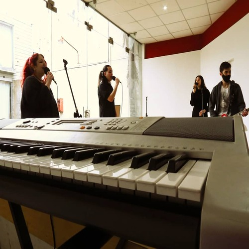
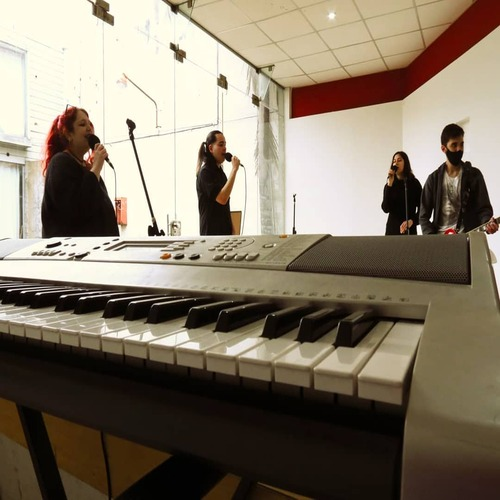

Historia de la escuela
La Escuela Experimental de Música Popular (EEMP) floreció hace más de una década a partir de un modesto taller de guitarra concebido por el director Julio Lobos y compartido inicialmente por un grupo de cuatro individuos vinculados a él. A medida que el tiempo transcurría, la demanda creció y se diversificó, atrayendo a personas de diferentes edades que buscaban aprender a tocar una variedad de instrumentos, desde la guitarra original hasta el bajo, la batería y el teclado, instrumentos fundamentales en las formaciones de bandas contemporáneas. Este crecimiento orgánico no solo condujo a la incorporación de nuevos estudiantes, sino también a la expansión del equipo docente. Varios profesores, cuyos caminos se cruzaron con el del director Julio Lobos a lo largo de su carrera, se unieron al proyecto. Hoy en día, la escuela puede enorgullecerse de una trayectoria robusta y variada, con la particularidad de contar con profesores que iniciaron su propio viaje educativo en las aulas de la EEMP. Este ciclo de aprendizaje continuo no solo refleja el compromiso duradero de la escuela con la educación musical, sino que también encarna la comunidad vibrante que ha construido a lo largo de los años.
¡Así trabajamos en la escuela!


 
